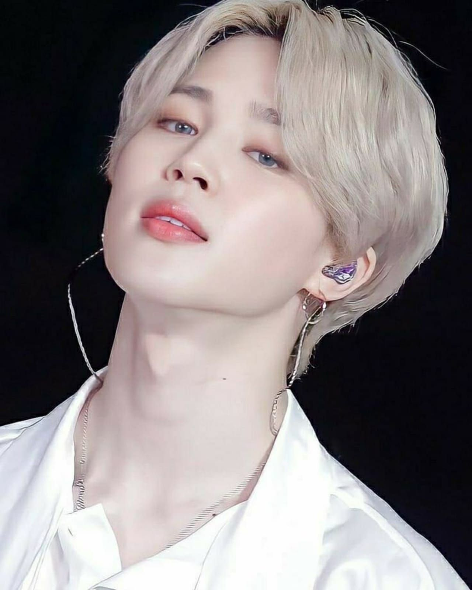

-

- 
BTS – это корейская мужская танцевально-музыкальная группа. Коллектив был создан музыкальным агентством Big Hit Entertainment (Label) и включает в себя семь участников.
Название BTS расшифровывается с корейского как BangTan Sonyeondan (Бантан Cонендан) или Bangtan Boys. На корейском: 방탄소년단, что переводится на русский как Пуленепробиваемые парни. На английском: Изначально на английский название BangTan Sonyeondan расшифровывалось как Bulletproof Boy Scouts (Пуленепробиваемые бойскауты). Бойскауты – это американские подростковые отряды разведчиков, в которых дети обучались выживанию в лесу, оказанию первой помощи, гражданским правам и обязанностям. Но в 2017 году расшифровка аббревиатуры изменилось на Beyond The Scene (По ту сторону сцены).
Перед вами имена участников на русском, на английском и на корейском языках, а также их псевдонимы. Прочтите о каждом из них в отдельных статьях.
Ким Намджун (Kim Namjoon, 김남준). Псевдоним: PM (RM).
Ким Сокджин (Kim Seokjin, 김석진). Псевдоним: Джин (Jin, 진).
Мин Юнги (Min Yoongi, 민윤기). Псевдоним: Шуга (Suga, 슈가).
Чон Хосок (Jung Hoseok, 정호석). Псевдоним: Джей-Хоуп (J-Hope, 제이홉).
Пак Чимин (Park Jimin, 박지민). Псевдоним: Чимин (Jimin, 지민).
Ким Тэхен (Kim Taehyung, 김태형). Псевдоним: Ви (V, 뷔).
Чон Чонгук (Jeon Jungkook, 전정국). Псевдоним: Чонгук (Jungkook, 정국).
В состав участников БТС входит семь человек. Каждый из них уникален и очень талантлив во многих областях. Но тем не менее в группе они занимают некоторые позиции.
Намджун – лидер, рэпер, продюсер, композитор, модель. Входит в хен-лайн и рэп-лайн.
Сокджин – вокалист, продюсер, композитор, модель. Входит в хен-лайн и вокал-лайн.
Юнги – рэпер, продюсер, композитор, модель. Входит в хен-лайн и рэп-лайн.
Хосок – рэпер, танцор, продюсер, композитор, модель. Входит в хен-лайн, рэп-лайн и дэнс-лайн.
Чимин – вокалист, танцор, продюсер, композитор, модель. Входит в макне-лайн, вокал-лайн и дэнс-лайн.
Тэхен – вокалист, танцор, продюсер, композитор, модель, актер. Входит в макне-лайн, вокал-лайн и дэнс-лайн.
Чонгук – макне, вокалист, танцор, продюсер, композитор, модель. Входит в макне-лайн, вокал-лайн и дэнс-лайн.
*Хен-лайн — старшие участники группы.
*Макне-лайн — младшие участники.
По корейскому возрасту (в Корее прибавляется один год и исчисление начинается с момента зачатия) им от 26 до 31 года.
Джин – 04.12.1992, 27 лет
Юнги – 09.03.1993, 26 лет
Хосок – 18.02.1994, 26 лет
Намджун – 12.09.1994, 25 лет
Чимин – 13.10.1995, 24 года
Тэхен – 30.12.1995, 24 года
Чонгук – 01.09.1997, 22 года
Есть определенный порядок, в котором всегда упоминаются участники и это возраст. От самого старшего до самого младшего (макнэ) участника группы. Есть одно исключение: лидер Намджун всегда идет в начале, хотя и не является старшим.
Мы подготовили для вас биографию БТС от дебюта и до наших дней. В основном это награды и достижения группы. Со временем биография будет обновляться, обрастая все большими подробностями. Группа BTS начинала в маленькой, по меркам кпоп, компании. В то время в год дебютировало от 30 до 50 новых корейских групп, но не все достигали успеха. Рынок был переполнен женскими и мужскими группами. В дебют BTS было вложено много сил и денег. История BTS начинается с выпуска сингла к альбому 2 Cool 4 Skool. А также первого мини-альбома O!RUL8,2?
Продажи: 24441 и 34030 копий, всего за год – 58471.
Альбом попал в топ-5 в еженедельном чарте альбомов на Gaon, в топ-10 месячных альбомов и в топ-65 годовых альбомов. Продажи физического альбома превысили 20 тыс. копий. 4 место Gaon Album Chart. Новичок года в 28 Golden Disc Awards, 5 Melon Music Awards и 23 Seoul Music Awards. 2014 Выход мини-альбома Skool Luv Affair и первого полного альбома Dark & Wild.
100856 и 100906 копий; всего за год, включая продажу предыдущих альбомов – 231214.
Дебют в топ-3 Gaon Album Chart. Переизданный альбом дебютировал с первого места Gaon Album Chart. Победа в Album Award на премии Golden Disk Awards. 2 в Gaon Album Chart, 3 в Billboard world Album, 27 в Top Heatseekers. 2015 Выпуск The Most Beautiful Moment In Life в двух частях.
203664 и 274135 копий; всего за год, включая продажу предыдущих альбомов – 563022.
Пятый по продажам за этот год альбом Южной Кореи. Бонсан на Golden Disk Awards и Seoul Music Awards. 1 место в Gaon Albums Chart и Billboard Albums Chart. 2016 Релиз первого специального альбома The Most Beautiful Moment In Live: Young Forever. И выход второго полного альбома WINGS.
368369 и 754301 копий; всего за год, включая продажу предыдущих альбомов – 1458644.
Первый дэсан в номинации Альбом Года на MelOn Music Awards. Победа как Альбом года на Soompi Awards, Hanteo Awards. Бонсан на Golden Disk Awards. Запись года на Seoul Music Awards. Альбом года – четвёртая четверть на Gaon Chart Music Awards. Blood Sweat & Tears достиг all-kill в чартах и занял 1 место. Вингс достиг 26 места в Billboard 200. Первое место в Billboard Social 50. 2017 Релиз второго специального альбома WINGS: YOU NEVER WALK ALONE. Открытие новой серии альбомов Love Yourself: Her.
Продажи:768402 и 1493443 копий; всего за год, включая продажу предыдущих альбомов – 2723123.
Достижения:Самый продаваемый альбом недели в Китае. Четвертое попадание в Billboard 200. Альбом года – первая четверть в Gaon Chart Music Awards. Альбом года Soompi Awards. 1 миллион предзаказов альбома. Номер 1 в iTunes 73-х стран. Дебют на 1 строчке в Gaon Album Charts и на 7 в Billboard 200. Первое место в Oricon Albums Charts. 2018 Второй альбом серии Love Yourself: Tear и выпуск репака Love Yourself: Answer.
1849537 и 2197808 копий; всего за год, включая продажу предыдущих альбомов – 5150410.
Предзаказ более миллиона копий альбома. Сертификат за продажу более двух миллионов. Сертификация RIAA (США) Третий самый продаваемый альбом Японии, хоть и на корейском языке. Первое выступление на 25th Billboard Music Awards и победа в номинации Лучший артист в социальных сетях. Возглавили Billboard 200 дважды с двумя разными альбомами. Первый раз стали номер один в Канадских чартах. Первый концерт на Американском стадионе. БТС выпустили первый фильм Burn the Stage: The Movie в кинотеатрах по всему миру и побили рекорды продаж ранее установленные One Direction. Третья победа на the 20th Mnet Asian Music Awards в номинации Артист года. 2019 Выход шестого мини-альбома Map Of The Soul: PERSONA и ост-альбома к игре BTS World.
3718230 и 553364 копий; всего за год, включая продажу предыдущих альбомов – 6218254.
Предзаказ более 2,6 миллиона. Альбом Map of the Soul: Persona стал первым в 80 странах мира в iTunes. Сертификация — Франция (SNEP) – 50 тыс — Япония (RIAJ) – 300 тыс — Польша (ZPAV) – 10 тыс — Южная Корея (КМСА) – З млн — Великобритания (BPI) – 60 тыс — США (RIAA) – 500 тыс
BTS World дебютировал в Billboard Top Soundtrack Chart. БТС в первый раз посетили Грэмми. Журнал Time включил БТС в число 100 влиятельных людей мира. Первое выступление корейской группы на американском шоу Saturday Night Live. Первый корейский альбом получивший номер один в Великобритании и Австралии. Третий альбом группы возглавивший Billboard 200 и третий альбом сделавший это в течение 11 месяцев. Что поставило их в один ряд с Битлз. Самый продаваемый физический альбом в США с 314000 копий. Сингл занял 8 позицию в Billboard Hot 100. Видео стало самым просматриваемым за в ютуб за 24 часа (74,6 миллионов просмотров). Альбом стал золотым в Австралии и платиновым в Америке. БТС выступали на стадионе Rose Ball вместимостью 60000 человек. Победа на 26th Billboard Music Awards в номинации лучшая группа и второй раз лучшая социальная активность. Выступление на легендарном Wembley Stadium в Лондоне. БТС откатали второй тур по стадионам, на этот раз на самых больших стадионах разных стран вместимостью от 50000 до 200000 человек. 2020 Релиз седьмого мини-альбом Map Of The Soul: 7 в честь седьмой годовщины группы.